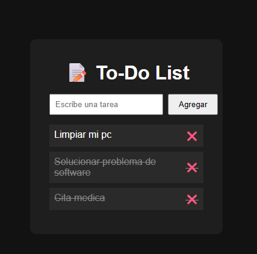
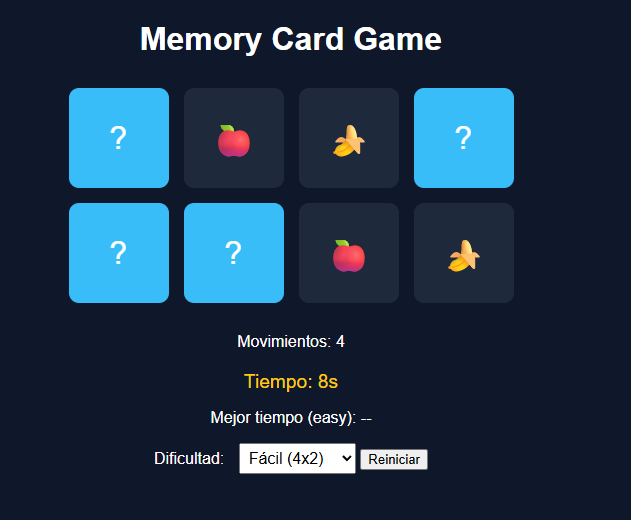
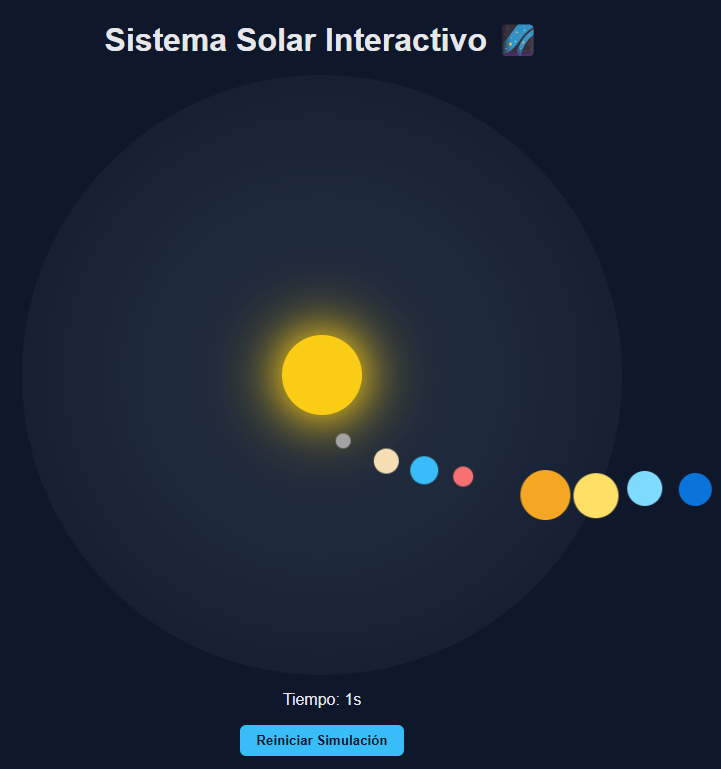
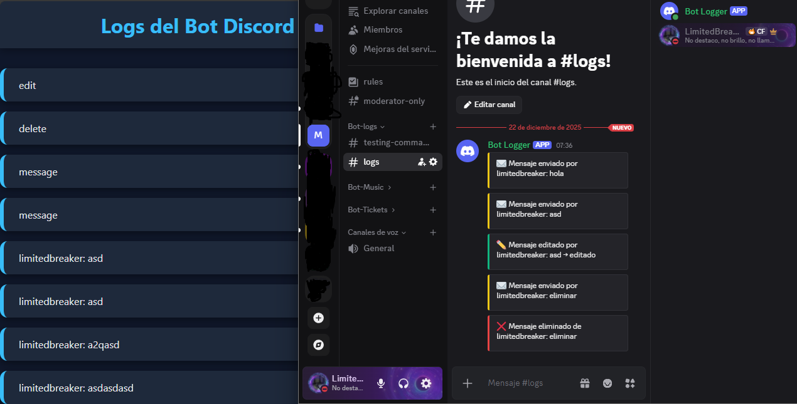

Proyectos
To-Do List en JavaScript
Aplicación para gestionar tareas con JavaScript. Permite agregar, completar, eliminar y guardar tareas usando localStorage.
Ver proyectoMemory Card Game
Juego de memoria interactivo con niveles de dificultad, temporizador y récord guardados en el navegador.
Ver proyectoSistema Solar Interactivo 🌌
Explora un mini sistema solar con planetas animados, órbitas realistas y detalles interactivos.
Ver proyectoBot de Discord - Logs Privados
Panel de logs del bot de Discord para eventos privados. Muestra mensajes, canales y actividad de voz con diseño visual.
Ver proyecto